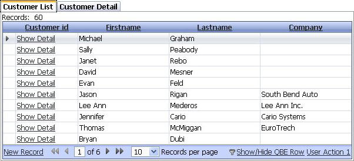
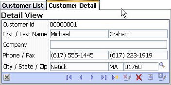

Master Templates
Property name: 'Use a master layout template' ('Grid Properties' pane)
Using a template allows you to layout the different parts of the Grid in the component definition, rather than on the page. Several different template styles are available, such as tabs and accordions. The Detail View includes a toolbar that allows you to navigate from record to record. The text on the tabs or labels can be specified, and the initial pane to show can be specified.
|  |
|
Grid in a master template layout with a Tab Container with tabs on top |
|  |
|
Detail view in a master template layout with a Tab Container with tabs on top |